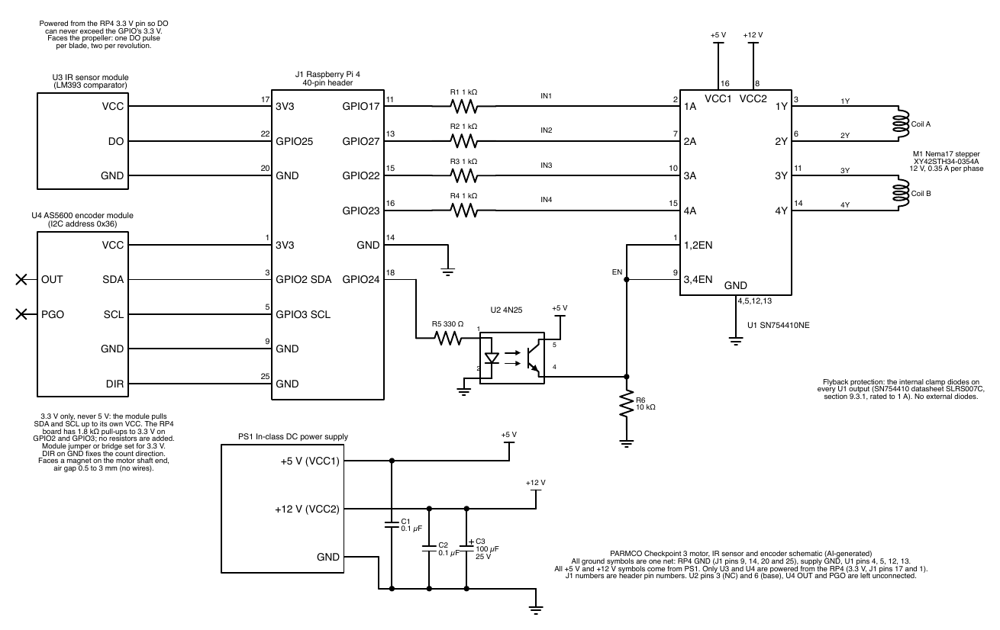

Hardware
The circuit has a motor driver, an optocoupler enable, an IR sensor for speed and an AS5600 encoder for angle. The full schematic, wiring table, assembly instructions and parts list are in the hardware package.
Schematic

Main parts
| Part | Role |
|---|---|
| Raspberry Pi 4 (RP4) | Runs the control program and the Bluetooth link; all GPIO goes through the class library |
| SN754410NE H-bridge (U1) | Drives the two stepper coils; the built-in clamp diodes handle flyback current [1] |
| 4N25 optocoupler (U2) | Enable switch for the H-bridge, driven from GPIO24 through 330 Ω with a 10 kΩ pull-down |
| Nema17 stepper (M1) | Turns the propeller; 400 half-steps per turn, 0.9° each |
| IR sensor module (U3) | LM393 comparator; one pulse per blade on GPIO25 |
| AS5600 module (U4) | 12-bit magnetic angle sensor on I2C (address 0x36) |
| Bench supply (PS1) | 5.0 V for VCC1 and 12.0 V for VCC2 |
Motor drive
The RP4 sets the four H-bridge inputs (GPIO17, 27, 22 and 23, through 1 kΩ resistors) to one of eight coil patterns in half-step mode. The 4N25 lets the RP4 switch both enable pins off, which removes all coil current. After a position move the motor rests with the coils off, held by the detent torque of the motor.
IR sensor
The IR module sits under the propeller and reads white tape on the underside of the blades, giving two pulses per revolution. Its output pulls up to its own supply, so it is powered from the RP4’s 3.3 V pin, never from 5 V.
AS5600 encoder
A small diametrically magnetised magnet on the end of the motor shaft turns over the AS5600 chip. The chip measures the direction of the magnetic field with a Hall array and reports a 12-bit angle, which is 0.088° per count. Nothing touches the magnet, so the encoder adds no load.
| AS5600 pin | Connects to |
|---|---|
| VCC | RP4 3.3 V, header pin 1 |
| GND | Header pin 9 |
| SDA | GPIO2, header pin 3 |
| SCL | GPIO3, header pin 5 |
| DIR | Header pin 25 (GND); fixes the counting direction |
| OUT, PGO | Not connected |
The air gap between the magnet and the chip is 0.5 to 3 mm, and the magnet has to be centred on the shaft. An off-centre magnet bends the angle reading, so we centre the magnet using the chip’s own magnet-strength readout (AGC and magnitude) and check the result against a printed protractor [2].
References
- Texas Instruments, “SN754410 Quadruple Half-H Driver,” SLRS007C.
- ams OSRAM, “AS5600 12-Bit Programmable Contactless Potentiometer,” datasheet.